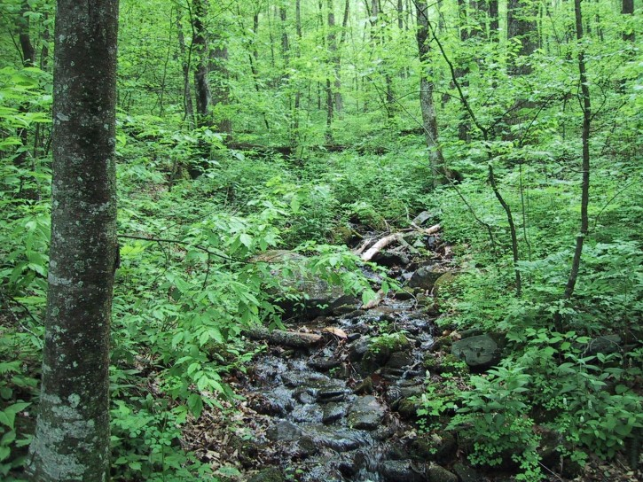

Trust for the Future was founded in 1986 to promote environmental stewardship and sustainability. The Trust provides a 501(c)(3) non-profit fiscal sponsorship umbrella for community-based initiatives aligned with our mission. Initiatives are founded and led by visionary project directors with abilities to transform their visions into positive results for the community. We do not fund projects. Rather, we provide the non-profit structure, status, due diligence and bookkeeping to allow you get started quickly and run your project as a non-profit. Once we approve your project, You may begin fundraising and writing grants.
If you have an idea for a non-profit project, fundraiser, or vision, no matter how small, or how large, contact us, or apply for sponsorship from Trust for the Future right here!